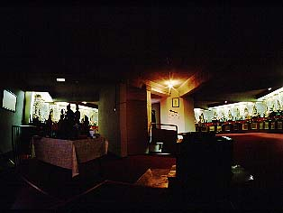
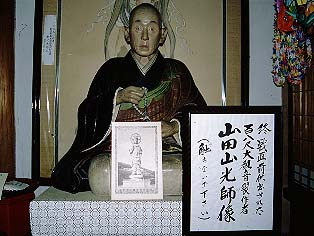

平和観音/長野県山ノ内町
長野県の山ノ内町というと「？」だが湯田中、渋温泉のあるところといえば温泉好きの方なら頷いていただけるだろう。
その湯田中の温泉街の一画に大観音がある。
正式には世界平和聖観世音菩薩または世界平和大観音というのだが淡路島の世界平和大観音と間違えやすいので通称の平和観音という呼び名を採用させていただく。あそこのあの大観音と間違われたら可哀想すぎるから。
この大観音さん、小高い公園にあり、大きさは25メートルでブロンズ製である。
「金属製」の「観音像」としては東洋最高だそうです。


完成は昭和39年。時期としては比較的早い時代の大観音像である。
八角形のコンクリートの台座の上に建つ一寸見洋風の大観音さんはえらいスマートである。激ヤセといってもいいかもしれない。
足元からファイヤーなのかオーラなのか判らないが何やらチラチラさせているのが特徴的だ。
大きさからいって胎内めぐりとかはないだろう。
うん、デカイ。さて温泉にでも入りにいくか、と帰ろうとした時、台座の前の電光掲示板が目に入った。
その案内によると何やら見所が色々あるらしい。
で、大観音像脇に建つ大悲殿にふらふらと行ってみた。
その時点ではまさかその後、衝撃の事実を知る事になろうとは思いもしませんでした・・・（詳しくはあとでね）
受付に拝観料100円（注；2012年現在は200円です）を払い大悲殿に上がりこむ。全コース大悲殿の方が案内してくれるという。
外に建つ大観音と同じ形の本尊を拝してから厄逐い太鼓を一発ドーンと打たせてくれる。
その後、色々とこの大観音像について説明してもらいながら廊下を通って行くと、おおおっ、何と八角形の台座の一辺がぶち抜かれていて廊下がそのまま台座の内部に直結してるじゃあ〜りませんか。
台座内は八角形の部屋で壁面にはずらりと西国三十三箇所の写し本尊が並んでいる。

聞けばこの写し本尊、一体一体西国の札所のオリジナルのあるお寺に持って行ってそれぞれ開眼供養をしてもらったらしい。
地下には戒壇巡り風の回廊がある。
ここは長野善光寺と関係が深く、大観音の開眼供養も善光寺の住職が執り行ったそうだ。そんな関係から善光寺にあやかってここの地下の通路は作られたようだ。実際には戒壇巡りのような暗闇の回廊ではないが台座の外周を回って善光寺の本尊にあやかった三尊像を拝んで入口とは別の出口から出てくる仕組みになっている。
台座内部中央には階段があり、そこを登ると台座の屋上つまり大観音の足元に出られる。
蓮華座の部分の正面には善光寺の住職が書いた「施無畏」の文字をブロンズ仕立てにしたものがある。これを手で摩れば長患い除けになるそうで、この辺で大観音ツアーもお開きとなる。お疲れ様でした〜。
たった100円でこの充実具合、しかもガイド付き。超お得な参拝ツアーだった。
ところで・・・
話は前後するが、大悲殿にいる本尊を見ているときに横に坊さんの木像があった。
何げなく見てみるとその坊さんの前に写真が。どこかの大観音の写真である。ここの大観音ではない。
しかし日本中の大観音をほぼ見て回っている私。この写真に映っている大観音像は見たことがない。見れば古そうな写真だ。
これはもしや・・・
生唾を飲み込みながら大悲殿の方に聞く。
「あ、それ？ここに戦前建ってた観音様。」
うっひゃ〜！！戦前大観音ゲットぉ〜！！！
・・・この初代大観音、護国観音といういかにも戦前的な名前で大きさが33メートル、完成は昭和13年だったという。
しかし青銅製であったことが災いして戦時下の昭和19年に金属供出のため解体されてしまい、その寿命はわずか6年間というかなりレアものの大観音さんだったのだ。
ちなみに台座はそのまま現在の観音様の台座として使われている。つまり先程入った台座は昭和13年につくられたモノだったのだ。
そして写真が掲げられていた坊さんこそ護国観音をつくった山田山光という人物だったのだ。
山田氏は愛知県出身、縁あってこの地にやってきて初代の大観音を建てたわけだ。愛知のヤマダ・・・どこかで聞いたような・・・
山田山光像の衣には文字がびっしり書かれている。護国観音建設にまつわる記録だという。
この、今はなき護国大観音像、時期や工法、規模を考えるともっとクローズアップされても良さそうなものであるが、考えてみたらこんな事に血道を分けているのもアタシ位なものなので、ここで大いに取り上げたいと思う。
改めて護国観音の写真を見る。現在の平和観音よりもがっちりしている。光背が付いているのが珍しい。
護国と平和というそれぞれのテーマに即したつくりだとも考えられる。
もしかしたらと思い、聞いてみるとやはり護国観音は内部が螺旋階段になっていて顔の部分まで登る事が出来て鼻の穴から外が眺められたらしい。そして螺旋階段の途中に三十三観音像がところどころに配置されていてそれらを拝しながら登ったのだという。
螺旋階段、写し本尊、展望台・・・
完璧に現代の大観音のプロトタイプだ。

完成当時＆建設中の写真。鋳造製ではなく一枚一枚銅板を手打ちしたものだったようだ。
さらに台座の中にあった三十三観音も山田氏がつくったものだという。西国のお寺に移し本尊を持って行ったのは山田氏、ということになる。
護国観音の姿を伝えるものとしてその原形となった旧本尊が今でも大悲殿の廊下に「ボケ封じ観音」として置かれている。
こちらは戦時下の供出を何とか免れたそうだ。護国の次の仕事がボケ封じとは少し淋しげ。
ボケ封じ観音となった観音像の横に護国大観音が完成した時の新聞記事のコピーが貼られていた。
むむむ。
建設者の山田山光は愛知の人ということは先程記した通りだが、新聞によると彼は巨像設計名人という触れ込みになっているぞ。
氏の手掛けた巨像は愛知県知多郡上野村の7２尺の大仏をはじめ50尺の阿弥陀如来像、27尺の弘法大師像となっている。
コレはちょっと凄すぎないですか？
愛知県知多郡上野村というのは現在の東海市のことである。7２尺の大仏というのは恐らく聚楽園大仏のことだろう。
聚楽園大仏がつくられたのが昭和3年。この大仏建立の工事を手がけた人物が山田光吉という人物である。
その山田光吉氏が山田山光の正体である。
(山田光吉氏に関してはこちらを参照ください）
恐るべし、尾張の珍寺番長山田氏。
っていうか50尺の阿弥陀如来像、27尺の弘法大師像のほうも気になるぞ。
そういえば台座のデザインもどこかで見た事があるような気もするし。
こりゃ山田氏の他の仕事も調べなきゃならんな・・・宿題を残しながら大悲殿を出て改めて平和観音を見上げる。
そういえば金属製の大観音って何で少ないんだろう。金属製で思い浮かぶのはみな大仏ばかりだ。
大仏を青銅製でつくるのは奈良、鎌倉からの伝統だから判るのだが、20メートル以上の鋳造製の大観音はここと福岡県の昇竜観音位のものなのでは。逆にいえばほとんどの大観音はコンクリート製なのだ。やはり立ち姿なので工法的に安定したコンクリート造のほうがつくりやすいのか。
そこで思い出されるのはイタリアのサンカルロ像だ。ブロンズ製鉄骨構造で像高23メートル。工法といいスケールといい極めて酷似している。だが、サンカルロ像は狭いながらも何とか上まで登れるぞ。スマートな平和観音さんだが護国観音に負けないように何とか胎内巡りが出来るようにしてもらいたかったっす。
ちなみに大観音の腰の部分にメンテ用の入口があります。工事中はここから職人さんが出入りしていたそうです。
2002.3.
珍寺大道場 HOME